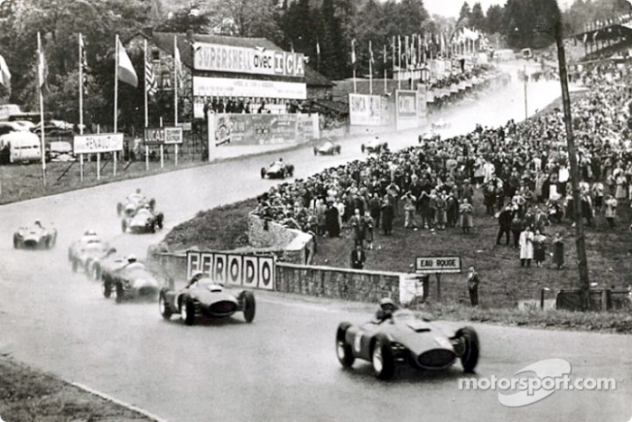

F1-1956. FERRARI, FANGIO Y EL CABALLERO COLLINS

FERRARI
La tragedia de las 24 horas de Le Mans de 1955 provocó el abandono de la competición de las flechas plateadas de Mercedes y el accidente de Alberto Ascari, que le costó la vida ese mismo año, hizo de detonante para que Lancia hiciera lo mismo.
- La prueba inaugural del campeonato volvía a ser el Gran Premio de Argentina disputado en el Autódromo Oscar Alfredo Gálvez en Buenos Aires.
- En una campaña en la que participaron unos 80 voluntarios antes del verano contactaron con 499 establecimientos de todo tipo: quioscos, fruterías, papelerías, bares, tiendas de reprografía. De entre estos, unos 20 siguen activos.
1956 GP de Belgica (eau rouge)
Aún en la vuelta 24 Fangio se detiene en boxes con problemas irreconciliables con la transmisión del Lancia y ya no volverá a la competición. Collins pasaba a ocupar ahora la primera plaza en carrera, seguido del Ferrari del piloto local Paul Frere, que en una emocionante lucha para el público conseguía arrebatar ese puesto a Jean Behra. En realidad el Maserati de Behra estaba en problemas y se paraba a pocas vueltas del final.